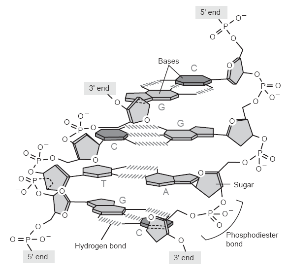
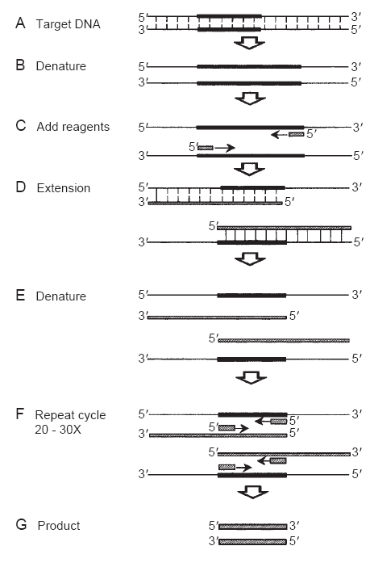

Clinical Molecular Diagnostics
In contrast to bacterial cells, all eukaryotic cells contain membrane-bound
organelles. The lipid bilayer cell membrane functions as the shell
of
each cell in the body; contains a hydrophilic and a hydrophobic surface; and
encloses the contents of the cell. Membrane-bound organelles within the cell
are encased in a lipid bilayer.
The nucleus is the structure containing the majority of genetic material within the cell. DNA is the genetic material of the cell. It is organized into chromosomes. Mitochondria are numerous within each cell. The number of mitochondria varies by cell type. Energy generation occurs within mitochondria by oxidative phosphorylation. Mitochondria have a small amount of DNA
The endoplasmic reticulum is a structure that is continuous with the nucleus, but contains no DNA. It is the site of protein synthesis.
The Golgi apparatus is a site of protein modification. Also protein transport to the cytosol occurs from here.
Lysosomes and peroxisomes and function in the removal of waste products within the cell.
 DNA is the genetic material of all cells and 99% is contained in the nucleus. Its structure is composed of purine and pyrimidine bases: A, T, G, and C. A phosphodiester backbone links the bases together to form a chain. A deoxyribose sugar is also contained at each base position. Two DNA chains are hydrogen-bonded to one another between adenine and thymine or cytosine and guanine. The two joined, antiparallel strands then twist into a double-helix.
Genes. Along the DNA strands are specific, short regions that encode for genes. Human DNA is further arranged into 23 pairs of matched chromosomes. The DNA strands are wound around histone proteins and these coil together to form a tightly packed chromatid. The two sister chromatids are joined at the centromere. These two joined chromatids form a chromosome. Telomeres are the ends of chromosomes contain repetitive sequences of a specific 6-base sequence: TTAGGG. This repeated sequence can be many hundreds of base pairs long. Telomeres protect genes at the ends of chromosomes from normal damage and shortening during DNA replication. They are also thought to be involved in the aging process.
Plasmids are extrachromosomal, circular pieces of DNA first identified in bacterial cells. They confer antibiotic resistance to bacteria. Plasmids are typically engineered in the laboratory to clone specific pieces of human DNA.
DNA Replication is a semiconservative process: strands are separated by enzymes and new nucleotides added to form a new strand using the original strand as a template. Replication is carried out by DNA polymerases. The result is the generation of two identical strands of DNA, each of which contain one strand from the original duplex. These are carried out in the 3-prime to 5-prime direction. One strand is directly copied from its template. The other strand is replicated in small pieces known as Okazaki fragments. These fragments are later joined by DNA ligase to form a contiguous strand of DNA.
RNA is a biomolecule occurring in different types (or classes). Transfer RNA (tRNA) is a kind that carries an amino acid to the protein synthetic complex (ribosome and mRNA) for incorporation into a nascent polypeptide. Ribosomal RNA (rRNA) will bind to several polypeptides for form an assembly that is called the ribosome. Forms a portion of the ribosome and participates in protein synthesis Messenger RNA (mRNA) is the template from which a polypeptide or protein is made.
Transcription is the process of converting the genetic code contained within the DNA into an RNA copy. After this process, the mRNA copy undergoes specific posttranslational modifications to prevent degradation, function in controlling the rate of protein synthesis, repair misincorporated nucleotides, or increase genetic diversity. Polyadenylation is the addition of long sequence of adenine (A) nucleotides to the 3′ end of mRNA. Capping is the addition of a methyl group to the 5′ end of mRNA. Splicing is the insertion, deletion, or editing of nucleotides after synthesis.
Translation is the process of utilizing mRNA transcripts to produce a polypeptide (or protein) represented by the original genetic code. The sequence of an mRNA is converted to a polypeptide and this occurs as a result of action of ribosome. Amino acids of the new polypeptide are represented by a triplet codon sequence; they are the basic components of proteins and contain an amino and a carboxyl group. Twenty amino acids are found in proteins
Polypeptides are chains of amino acids. They have a secondary structure which is α-helix or β-sheet. They are components or subunits of a mature protein. Enzymes are all are proteins, catalyzing specific chemical reactions within or outside of the cell. DNA synthesis proteins are common examples of enzymes. They also are involved in the degradation of cellular components, in cell division. They are also produced commercially for use in the laboratory.
Nucleic acid isolation begins with specimen collection. For whole blood, the most common type of molecular diagnostic specimen, blood is collected in EDTA (purple top) tubes. Do not use heparin (green top) tubes since it is a potent inhibitor of PCR. Blood specimens are stored at 4° until needed. Tissue specimens should be frozen immediately upon receipt or held in cell culture medium at 37°C until processing. Buccal swabs are often used for remote site testing, and the type useed for parentage testing. Swabs should be air-dried before shipment to the laboratory. Other specimens are those also commonly encountered in the clinical lab including urine, feces, sputum, cerebrospinal fluid, genital swabs, semen, etc. Other molecular diagnostic specimens include sections of formalin-fixed paraffin-embedded tissues, bone, hair, and fingernails (usually confined to forensic specimens).
The isolation of the DNA can be done in several ways.
gold standard.Yields a large mass of high quality DNA. It can be used to isolate DNA from any specimen type. This method normally requires a large mass of starting material.
RNA isolation can be done by any of the following:
Using spectrophotometry, the A260 value is used to calculate nucleic acid mass. When the A260/280 ratio is between 1.8 and 2.0, this is indicative of sufficient DNA quality for clinical manipulation. Lower ratios indicate impure specimens. For RNA for clinical work the A 260/280 should be ratio between 1.9 and 2.1.
For amplification of target, we use PCR.
 The polymerase chain reaction is the method by which almost all molecular diagnostic assays are performed. It is a three-step process consisting of melting the duplex DNA strands, annealing the primers, and extending the new fragment to yield a specific, short DNA product. This process is repeated 25 to 40 times to theoretically yield trillions of copies from one starting copy of DNA (see figure at right). Primers are short segments of synthetically manufactured DNA used to define a specific position to be copied in the PCR process. Each PCR reaction requires two primers�one on either side of the fragment to be amplified. Magnesium chloride is a salt required as a co-factor for the polymerase (enzyme) used to carry out PCR. The Taq polymerase is the enzyme used to generate new DNA copies in the PCR process. It is a thermostable enzyme, meaning that it will not degrade at very high temperatures used in the PCR process. Buffers containing potassium chloride, sodium chloride, and other additives are also included in the reaction to stabilize the enzymes and DNA during the PCR process. dNTPs (A, T, G, and C) are the individual building blocks of the DNA strand. A very small mass of the genomic DNA specimen of the patient to be tested is also added to the reaction. The PCR process only requires femtomolar quantities of input DNA.
Transcription-based amplification (TMA) is an alternative method to PCR that is not based upon direct amplification of the genomic DNA template.
This is another method that does not rely on direct amplification of the template DNA strand. Two commonly encountered clinical examples of this strategy include:
This is yet another method of detecting a DNA target without direct amplification of the template DNA. It relies on detection of substrates bound to the target nucleic acid.
This method used in many applications within the molecular diagnostics laboratory. It is a method used to fractionate DNA at sequence-specific locations using restriction enzymes. Restriction digestion is used to generate size standards and to prepare genomic DNA for analysis by Southern blotting and hybridization.
Gel electrophoresis is a method used to separate DNA fragments onto a solid matrix based upon size. 1. Agarose gel electrophoresis is most often performed to resolve DNA fragments larger than 100 bp in size. 2. Polyacrylamide gel electrophoresis is the method of choice to resolve small DNA fragments.Very high concentrations of polyacrylamide matrix can resolve down to 1 bp differences in size. 3. Capillary gel electrophoresis is a modification of polyacrylamide gels used in automated DNA sequencing and genotyping platforms.
Quantitative real-time PCR is a PCR method starting the mRNA as a template. This method is capable of quantifying the copy number of mRNA transcripts present in a specimen. 1. Reverse transcriptase is the enzyme used to make a copy DNA, or cDNA, from the mRNA transcript contained in a specimen. This process is referred to as cDNA synthesis. 2. Real-time PCR is the general term for the PCR method used to observe the production of new DNA fragments in real time on an automated platform. a. SYBR green is a dye often used in quantitative real-time PCR assays to detect newly generated DNA fragments. b. TaqMan chemistry is an alternate system of amplification and detection of fragments in quantitative real-time PCR using dye-labeled probes.
DNA sequencing allows determination of each base pair in a single strand of DNA. 1. Sanger dideoxy sequencing is the original method of DNA sequencing and the basis of all DNA sequencing used in the clinical environment today. It is based upon the incorporation of dideoxy nucleotides in random positions in the newly synthesized DNA strand. 2. Fluorescent DNA sequencing is a method by which DNA sequence is determined based upon incorporation of a dye-labeled dideoxy nucleotide and resolution on a capillary electrophoresis instrument. Each dideoxy nucleotide is labeled with a specific dye and when incorporated, is excited by a laser and detected by a CCD camera on an automated platform.
Microarray technologies are the newest area of use in molecular diagnostics. They fall into two general categories:
Single nucleotide polymorphism arrays are those designed to detect single base or other small changes in DNA sequence across the entire genome simultaneously. Many thousands of positions can be interrogated in one experiment.
Gene expression arrays are those designed to assess global changes in expression of specific genes in a given tissue at a given time or under a specific set of treatment parameters.
Fragile-X is a X-linked condition primarily affecting males and causing mental retardation. It involvesr trinuceotide repeat expansion
Duchenne muscular dystrophy is also an X-linked condition that causes muscle degeneration. The affected gene is dystrophin and it involves the deletion of entire exons.
Myotonic dystrophy is an autosomal dominant conditions having multi-system effects. The mutation involves the expansion of trinucleotide repeats with anticipation, which means the condition worsens with increasing repeat size in successive generations.
Cystic fibrosis (CF) is an autosomal recessive that most commonly affects whites. The disease is multi-system, but the manifestations affect the lungs and the ability to sustain breathing. The CFTR gene shows many individual mutations. 70% of CF cases shows a mutation at F508.
Minimal residual disease detection is a commonly performed assay in molecular diagnostics. It is the determination of the effectiveness of a therapy or the tracking of a patient's disease status based upon the presence of specific mRNA transcripts known to cause leukemia or lymphoma. Chronic myeloid leukemia (CML) is characterized by the presence of the Philadelphia chromosome or 9;22 translocation. The transcript can be detected by quantitative real-time PCR and the size determined by fluorescent capillary electrophoresis.
In molecular oncology, clonality is the presence of a specific T or B cell clone originating from a lymphoma. The clone is detected using PCR and fluorescent capillary electrophoresis.
Microsatellite instability is a genetic phenomenon observed in cells undergoing changes in specific cells. It is the expansion of short, repetitive stretches of DNA to much longer stretches that change gene expression within the cell. HNPCCis a hereditary form of colon cancer that is marked by microsatellite instability.
Loss of heterozygosity is the nature of some tumors to exhibit loss of function of one allele in a specific gene in a cell in which the other gene was already inactivated. The most common example of a cancer caused by this process is retinoblastoma, in which expression of a tumor suppressor gene is lost.
Drug metabolism and sensitivity can be determined through genotyping of DNA or gene expression analysis. Cytochrome P450 (P450) genotyping is performed to determine drug sensitivity. The test is carried out on a microarray platform.
The methods can be used to detect infectious disease.
The following bacterial organisms can be easily detected (qualitative identification) using PCR:
The following viruses can be identified using quantitative molecular methods:
There are a number of ways by which human identification may be performed. The most widely used system is based upon determination of the length of repetitive DNA in specific regions of chromosomes across the human genome. This is termed DNA-based human identification.
HLA polymorphisms are not as diverse as those observed using other systems of identification. This is an older system of human identification.
RFLP analysis was the first DNA-based identification system. It is based upon polymorphism in the length of restriction enzyme-cut products across the genome. It utilizes Southern blotting and hybridization as a method of laboratory testing.
This is most widely used system for identification of individuals. It has a
very high power of discrimination. Common alleles are typed and compared to the
CODIS database for criminal investigations. A forensic DNA typing of older
specimens or cold cases
utilizes this system when the specimens are in
acceptable condition. Parentage testing uses the same STR system as those used
in the CODIS allele database. Bone marrow engraftment is a clinical application
of this chemistry. STR analysis may be performed to track donor versus
recipient DNA components following transplant.
Other uses of DNA-based human identification include QC of histological
specimens to ensure that a patient matches a specific specimen.
This is identification of individuals based upon their mitochondrial haplotype.
It is primarily used on degraded specimens. It is only capable of determining
maternally inherited alleles with this system, because mitochondria are passed
from mothers to all offspring. It is often used in cold cases,
because
there are many hundreds of copies of mitochondrial DNA present for every one
copy of nuclear DNA. This allows for a greater possibility of success in
analysis.
This is a newer system for human identification. It is only capable of determining paternally inherited alleles. This system is only used to type males It is based upon repeat length polymorphism.